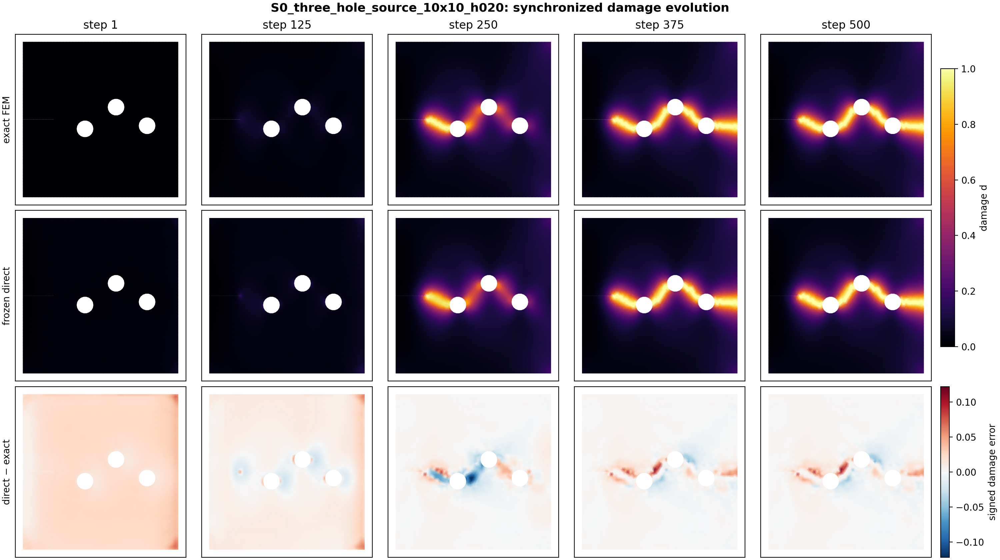
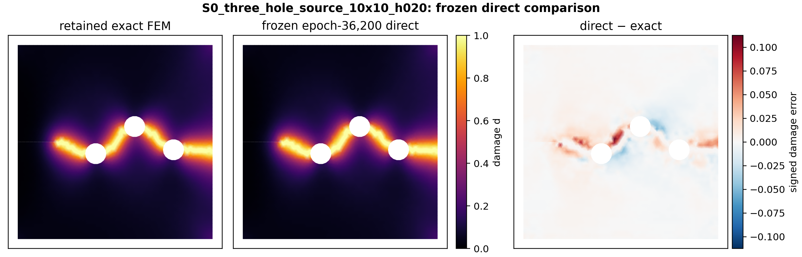

Case study: a direct learned damage replacement#
This optional case study uses a frozen Radius-GNO model in a compact three-hole phase-field fracture problem. At every load increment, the model receives the current mesh, damage history and boundary context, then provides the damage field used by the next mechanics update.
Important
This is a direct replacement demonstration. At each increment the model’s damage prediction, projected onto the prescribed damage bounds and irreversibility constraint, supplies the next mechanics update. The direct route uses zero exact damage solves; a separate FEM calculation provides the comparison fields.
The compact FEM problem#
The recorded comparison uses 3,009 nodes, 5,747 triangular elements and 500 load increments. The frozen model is evaluated once per increment. The figure shows the retained FEM field, the direct learned prediction and their signed damage difference through the same loading history.
{kind=link}

Figure 1 FEM reference, direct Radius-GNO prediction and signed damage error. The same colour range is used for both damage fields.#
What the recorded comparison shows#
Quantity |
Matched value |
|---|---|
FEM damage-stage time |
27.22 s |
Direct Radius-GNO damage-stage time |
28.98 s |
Direct / FEM damage-stage ratio |
1.065 |
Direct model calls |
500 |
Exact damage solves in the direct route |
0 |
Final crack-support IoU, \(d\geq0.5\) |
0.953 |
The direct model reproduces the main crack path in this comparison. Its damage-stage time is 6.5% longer than the FEM damage-stage time on the recorded CPU. This stage includes graph construction and message passing. Evaluating acceleration requires timing the complete calculation on the same mesh and comparing its fields and observables with the reference result.
{kind=link}

Figure 2 Final-state comparison. The direct route contains the learned prediction only; the FEM reference is retained separately for evaluation.#
How this connects to Lab 3#
The classroom notebook uses a small course-owned field model so every student can train, save, reload and inspect a proposal in Google Colab. This case study then shows the same model-interface idea on an actual phase-field FEM trajectory. The timing table describes the recorded comparison. Measure the complete notebook separately when assessing runtime on a laptop or Colab.